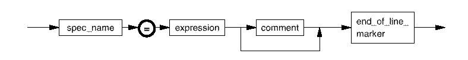

derived_spec
An equation set contains one or more equation, each of which is defined according to the following syntax:

spec_name |
An identifier (see Common Syntax Elements) defining the derived spec (variable) name. This is the name by which the derived spec is referenced throughout the equation set. |
expression |
See Syntax of expression. |
Functional changes
- Introduced before SmarTest 6.3.2